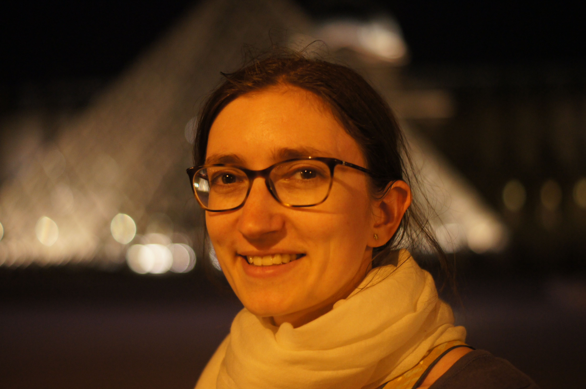

Mireille Soergel |
|
|
Max Planck Institute for Mathematics in the Sciences
Inselstraße 22 04103 Leipzig Germany mireille.soergel at mis.mpg.de office: G2 O5 pronouns: she/her |
 |
|
| |
|
I am currently a postdoc at the Max-Planck Institute for Mathematics in the sciences in Leipzig, Germany, working in Anna Wienhard's Geometry, Groups, and Dynamics research group. Before that I was a scientific assistant at ETH in Zürich, Switzerland. I completed my PhD at the Université de Bourgogne in Dijon, France. My supervisors were Thomas Haettel and Luis Paris . My research is in geometric group theory. I am particularly interested in Artin groups, Coxeter groups, non-positive curvature and Garside structures.
My CV can be found here. | |
Publications and preprints
| |
Recent & upcoming travel
| |
|
Octobre 2023 | |